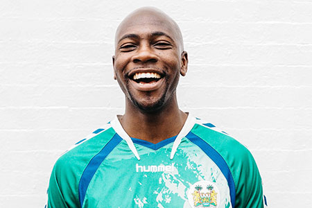

Praktikum kali ini memberikan banyak ilmu tidak hanya pemasangan teleskop bahkan pengolahan data hingga pengolahan gambar dengan mempertimbangkan banyak hal. Pada praktikum praktikum yang terlaksana, memberikan pelajaran penting bahwa dalam pengambilan foto pada astronomi bahwa terkadang hal kecil dapat menjadi pertimbangan yang besar karena dapat berpengaruh pada pengambilan gambar.
Resky Sinaga

Praktikum Instrumentasi Observasi 2 memberikan pengalaman yang menarik karena saya dapat belajar menggunakan berbagai instrumen astronomi secara langsung. Melalui praktikum ini, saya menjadi lebih memahami proses observasi, pengambilan data, serta analisis citra astronomi. Selain menambah pengetahuan, kegiatan ini juga melatih ketelitian dan kerja sama dalam tim.
Amira Shafwa
Selama mengikuti Praktikum, saya mendapatkan banyak pengalaman dan pengetahuan dasar baru di bidang astronomi, khususnya melalui kegiatan merakit dan mengoperasikan teleskop serta melakukan pengamatan malam. Praktikum ini memberikan pengalaman belajar yang baik karena membantu saya memahami materi yang dipelajari di kelas dengan lebih baik.
Margaret Dwi
pengalaman baru mengobservasi langit menggunakan teleskop bagus, tidak seperti dirumah dan didampingi oleh orang yang berpengalaman sehingga mendapatkan ilmu lebih tentang observasi langit malam. seru saat mengamat langit, namun banyak sekali gangguan atmosfer yang mempersulit pengamatan.sangat menyenangkan merakit teleskop, membongkar teleskop, dan mendapatkan hasil observasi langit.
M. Ghazzy
Pengalaman baru melakukan pengamatan malam yang hanya didampingi oleh asisten. Seru tapi ternyata cukup sulit
Hunafa Rahmani

Pengalaman dalam praktikum IO 2 ini sangat seru mulai dalam mengamati benda langit secara langsung dan memberikan pengetahuan baru dalam memahami teori astronomi, dan saya berharap mata kuliah ini terus berkembang dengan target objek yang lebih luas di bawah bimbingan luar biasa dari dosen serta asisten
Pijar Damara
Praktikum malam sangat seru dan menambah wawasan saya tentang pengamatan benda-benda langit secara langsung. Kegiatan ini juga membantu memahami materi astronomi yang telah dipelajari. Semoga praktikum seperti ini terus diadakan dengan objek pengamatan yang lebih beragam dan kondisi pengamatan yang semakin baik. Terima kasih kepada dosen dan asisten yang telah membimbing selama kegiatan berlangsung.